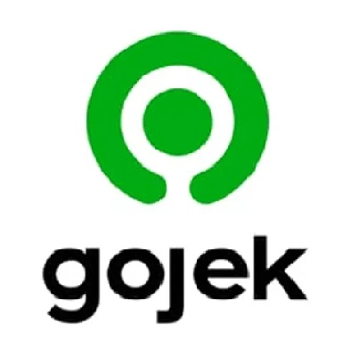

GOJEK
Gojek mengungkapkan bahwa logo barunya yang dinamai Solv diambil dari kata bahasa Inggris “Solve” yang berarti memecahkan masalah. Dengan demikian logo baru Gojek merupakan simbol dari berbagai solusi yang disediakan oleh layanannya.